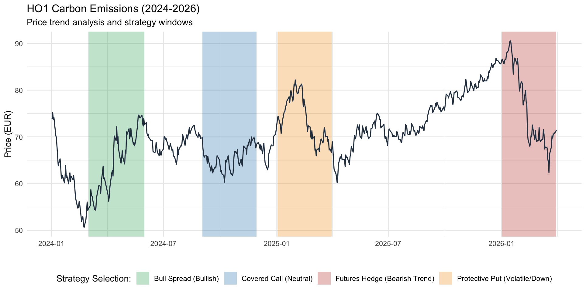
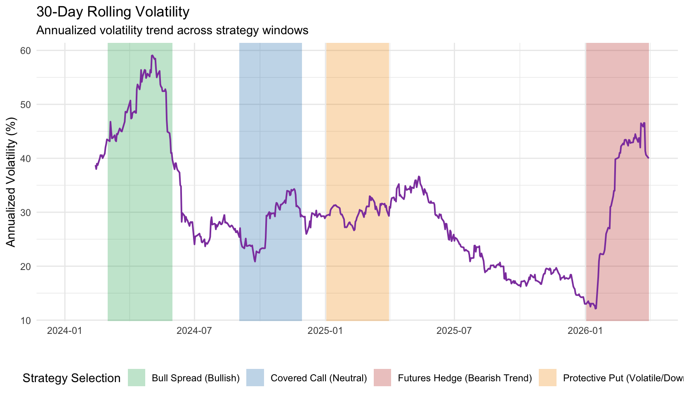

Carbon credits are unlike other major commodities, their price responds to politics over anything else. When the EU adjusts its climate mandates, the market moves. This makes the European carbon market a fascinating and challenging arena for both hedgers and speculators.
This post is based on a paper I wrote as an assignment for my "Advanced instruments for sustainable investing" course at Ca' Foscari. Using daily closing prices from Bloomberg covering 2024 to early 2026, I analyzed how four classic derivative strategies (bull spread, covered call, protective put, and futures hedging) could have been deployed at different points in the carbon credit price cycle. My goal was to show that choosing the right strategies can be of vital importance to manage risk in a highly volatile and policy driven market.
Case Study: Carbon Credits (HO1), 2024–2026
The analysis aims to evaluate 4 main derivative hedging and speculative strategies within the Carbon Emissions market (HO1). The dataset consists of daily closing prices for European Carbon Credits, sourced from Bloomberg, covering a period from early 2024 to early 2026. The data was analyzed through the program R to generate tables and plots. This commodity was selected due to its unique "policy-driven" volatility and its increasing relevance in the transition toward Sustainable Finance. This commodity is in fact distinguished by high volatility periods highly correlated to changes in European environmental policies. Actors involved in this sector therefore need to engage in hedging strategies, and speculators may find valuable opportunities to exploit.
Descriptive Statistics
Computing the descriptive statistics of this commodity is useful to understand its fundamental characteristics and general "behavior". A critical observation is the imbalance between a very low annualized return rate of 3.77% in spite of an annualized volatility of 32.26%. This high level of risk relative to a low return demonstrates that a passive strategy wouldn't be profitable. This imbalance is in part explained by the high kurtosis level of 3.88, which is a sign of "fat tails" in the distribution, meaning the commodity is capable of meaningfully high price swings. This data suggests that option hedging strategies would be very beneficial, but they would also be costly as high volatility drives up an option's price.
| Metric | Value |
|---|---|
| Mean (Daily) | 0.00014948 |
| Annualized Return | 0.03766872 |
| Volatility (Daily SD) | 0.02031985 |
| Annualized Volatility | 0.32256759 |
| Skewness | 0.18598676 |
| Kurtosis | 3.88449168 |
| Minimum | −0.07526603 |
| Maximum | 0.08294108 |
Price Trend Analysis
The figure below shows the plotted price trends with highlighted sections corresponding to ideal periods to engage in options or futures strategies. These strategies appear clear today thanks to the full picture offered by past data, but a market-conscious player may have predicted them thanks to the strong correlation of the commodity with European policies.

Figure 1: Price trend and strategy plot
Bull Spread — Early 2024
The first months of 2024 are characterized by a sharp price decline followed by rapid increase. This dynamic was mainly caused by EU "front-loading" the auction of carbon permits to fund the REPowerEU plan. Front-loading means that some of the permits scheduled to be auctioned in future years were instead auctioned in 2024. The increased supply initially caused a sharp price drop. The market then realized that the anticipated permits would not be available for auction in the future, so the price began to climb up again.
In this situation, a bull spread would be a good strategy to profit from the price increase while still being protected from the possibility of another price fall. The expectation would have been that the prices would resettle to a normal level, so it would make sense to set there the high strike price, giving up on any profits coming from an extra-ordinary price increase. On the other hand, this allows to set a floor to a potential loss related to the eventuality of more permits being front-loaded, while making the strategy cheaper than a normal long call, that could be riskier as the resettlement process could take longer than expected.
Covered Call — Late 2024
Late 2024 was instead characterized by a calmer sea. No policy changes were on the horizon, and the market was waiting to see the verified emission reports from the recently included shipping sector. This was a good period to profit from stability through a covered call. With a long position on the stock, shorting a call meant pocketing the premium, generating "synthetic yield" during a period where capital gains from price appreciation were unlikely.
Protective Put — Early 2025
In early 2025 the EU regulators announced an update to the benchmarks for "Free Allocations" given to heavy industries. Softer than expected requirements would have meant that industrial companies suddenly had a surplus of credits to sell, causing a price decrease. A player interested in hedging against this risk could have taken on a protective put strategy. Owning a long position on the commodity, going long on a put would have created an opposite position to offset the loss in the case of a price fall. A protective put would then act as an insurance, limiting the losses at the premium's cost.
Futures Hedging — Early 2026
At the start of 2026, another price crash is in sight. 2025 ended with high prices, possibly also due to the low volume of auctions caused by 2024's front-loading strategy. Geopolitical tensions could also be the reason of the increase, as energy companies face a shortage in the supply of oil and gas, and they might have increased their permits demand to start burning coal. Anyhow, the market expected the EU to increase the permits supply, to stop the price surge and help companies meet their needs in this difficult period.
In this scenario, hedging can be done by entering a short futures position before the price crash, locking in the high price with no premium costs. Once the price crash occurs, the firm closes the position by entering a long futures contract, effectively buying back the obligation at the new, lower, market price. The difference between the high initial sale price and the lower repurchase price generates a profit that offsets the loss in value of the physical carbon credits previously held in the portfolio.
Volatility Analysis
The 30-day rolling volatility plot shows the monthly volatility average since 2024. The analysis of this plot serves as a further confirmation of the validity of the selected strategies, because volatility is one of the main drivers of an option's price.

Figure 2: 30-day rolling volatility plot
The price spikes of early 2024 meant great market uncertainty, driving the volatility to its highest level during the analyzed time frame, therefore making a call option extremely expensive. A bull spread on the other hand offsets this cost thanks to the premium received by shorting the second call at the higher strike price. Because a higher strike price reduces the premium, the strategy would still require an initial investment.
From mid-2024 to the start of 2025 volatility remained stable around its lowest level. During this period single option strategies were more viable as the premium wasn't driven up by extreme volatility. Selling a covered call therefore provided a modest but low-risk income, allowing the portfolio to avoid stagnation. On the other hand, this also made buying insurance through a protective put pretty cheap, establishing a bottom floor but not capping any potential profit.
Finally, volatility surged once again during the first months of 2026, making an option hedge too expensive compared to a futures contract. Hedging through futures allowed to lock in the high prices from the end of 2025 and perfectly offset the losses from the 2026 crash without paying upfront premiums to an overpriced options market.
Conclusion
The analysis of the HO1 Carbon market between 2024 and 2026 demonstrates the strong connection between price movements and the broader European regulatory and geopolitical landscape. By synthesizing price trends and volatility, this study highlights some of the various possible strategies that allow to benefit from an unstable commodity like this one. From a sustainable finance perspective, these results illustrate the complexity of managing risk in a market where carbon is a political commodity. As the EU continues to tighten its climate mandates, the ability to navigate these policy-driven cycles using a sophisticated toolkit of derivatives will remain a fundamental requirement for ensuring financial stability during the green transition.
This post is based on an academic paper written for the Commodity Risk Management course, Master's in Sustainable Finance, Ca' Foscari University of Venice, April 2026.